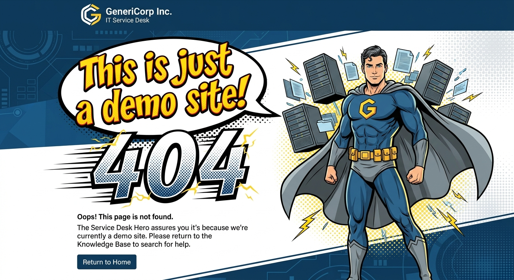

HTTP 404 — Feature Unavailable
Looking for live ticketing or action links?
This GeneriCorp website is a conceptual demonstration environment built specifically for URL extractor testing, knowledge base scraping, and AI agent indexing.
What is available on this site?
- Available: 34 fully formatted IT knowledge base articles with step-by-step resolution guides on hardware, Webex, software, security, and VPN.
- Not Available: Ticket submission backends, active SSO integrations, live phone lines, or actual IT support fulfillment.